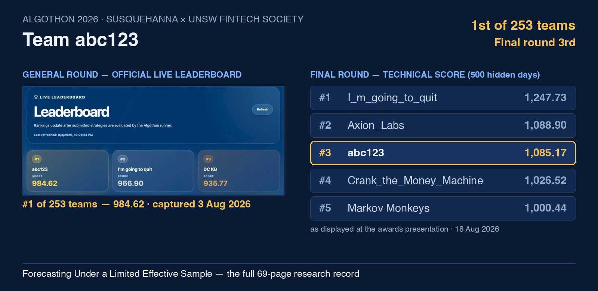
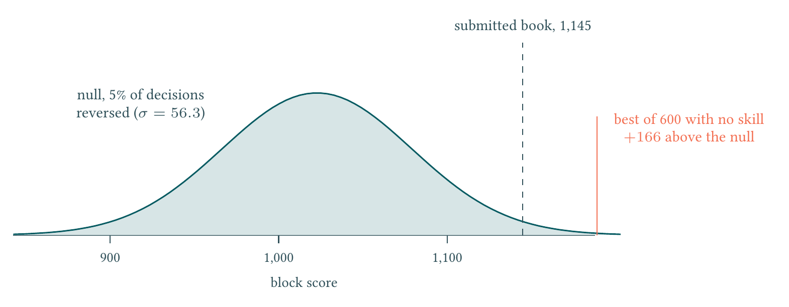

Yiping Yin
Systematic quantitative trading and AI quantitative research
Sydney, Australia · UNSW Sydney, graduating Aug 2026 · looking for graduate and intern roles in quantitative research and trading
About
Hi! I work on systematic trading and AI-driven quantitative research, currently finishing a Bachelor of Commerce (Finance) at UNSW Sydney. I care about one unglamorous thing above all: the effective sample is smaller than it looks — so I price selection luck before believing a backtest, and ship the simplest thing that survives falsification.
Most recently my team placed 1st of 253 teams on the General-round leaderboard of Algothon 2026 (Susquehanna International Group × UNSW FinTech Society), and 3rd in the Final round, scored on 500 days of market data nobody had seen. The full 69-page research record — every constant derived from the published rules before any data was read, every claim graded by evidence class — is public.

News
- Aug 2026🥉 3rd in the Final round of Algothon 2026 — technical score 1,085.17 on 500 hidden days. It landed within 0.4 standard errors of the mean we had predicted before submitting, against a threshold fixed in advance.
- Aug 2026📄 Published Forecasting Under a Limited Effective Sample, the complete 69-page research record, with a postscript reading the verified outcome against thresholds fixed before any hidden-window result existed.
- Aug 2026🥇 1st of 253 teams on the Algothon 2026 General-round leaderboard (984.62, public data, as of 3 Aug).
- Jul 2026Completed the UNSW FAIC AI-engineering training — RAG, LangGraph, MCP, multi-agent workflows, and a 4-bit QLoRA adaptation of Llama-3.1-Nemotron-Nano-8B.
- Jun 2026PittsAI, a multi-agent customer-simulation prototype, was selected as a Peter Farrell Cup 2026 finalist and joined Antler Australia AUS16.
- Feb 2025Started reconstructing trade-aligned L2 order books from nanosecond ASX/Cboe prints — the project that turned into my main line of microstructure work.
Systematic quantitative trading
Algothon 2026 — systematic multi-asset strategy
A lead–lag and reversal core in a four-horizon pair portfolio, calibrated on full-history, 500-, 420- and 360-day windows with ADF, AR(1), correlation and mean-crossing filters. Code and configuration hashes were locked before each cutoff, local traces reconciled against the official evaluator, and every candidate falsified against a threshold fixed in advance.
Seven near-relatives beat the submitted engine on nominal score; the best margin was +1.14 points against a selection price of +166, so none were submitted. What shipped was the version with the simplest structure and the fewest unverified parts — and out of sample it landed inside the noise band the analysis had priced for it.

Market microstructure and intraday cross-asset trading
Reconstructed trade-aligned L2 snapshots from nanosecond ASX/Cboe prints under same-venue, strictly-prior-timestamp matching — a deliberately severe rule that discards far more candidate pairs than it keeps, because a single lookahead match contaminates everything downstream. Built 5-second ETF cross-asset fair-value signals and 1-minute/1-second microstructure features from Nasdaq-100 futures, AUD/USD, spread, depth, order imbalance and time-of-day, then ran chronologically split, cost-aware simulations with ablation and stress testing to separate signal value from execution assumptions.
Algorithmic market making and execution
An automated market-making loop over five-level books: equal-volume IOC legs for cross-book spreads, inventory-aware passive quotes, EWMA-volatility adaptive thresholds, self-trade protection, fill confirmation, covariance risk gating and automatic flattening. Sessions ended flat rather than carrying inventory, which is the property I was optimising for; a next-trade model reduced RMSE against the mid-price benchmark by 4.4%.
AI quantitative research
Point-in-time multi-asset, news and event pricing
I build point-in-time panels covering 50 US equities, 10 cryptocurrencies and 149,683 news headlines, with ETL, deduplication, source provenance, timezone and publication-time alignment — so that out-of-sample multi-asset and sentiment research cannot quietly consume the future. The panels are served through Modal and FastAPI with signed webhooks and idempotent event handling, and I am building an earnings-event agent that freezes its point-in-time inputs and submits abnormal-return percentiles for live evaluation.
Evidence-grounded financial agents
A financial agent bounded to RBA, ASX and AFR sources, using deterministic queries, structured tool traces and evidence-constrained synthesis that links sources, parameters and intermediate outputs to its conclusions. The design treats agent output as a hypothesis to audit rather than an answer to trust, and reports disagreement, uncertainty and drift instead of hiding them behind fluent prose.
Multi-agent simulation and AI safety
Multi-agent behaviour, game theory and AI safety
I built a research-grade public agent-network dataset — roughly 1.5M posts and 13.4M comments across 762,644 profiles and 32,081 communities — with incremental deduplication and integrity checks. On top of it I run game-theoretic multi-agent experiments that vary information structure, memory, repeated interaction and market rules to separate autonomous strategy from prompting and scripted automation, with counterfactual interventions for reward misspecification, unsafe exploration, distribution shift and correlated failure.
PittsAI — multi-agent customer simulation
A prototype that converts company materials and user-defined operating assumptions into comparable scenarios for product, pricing, channel and service decisions. Customer types and behavioural rules are varied in controlled scenarios, and synthetic results are never treated as direct market evidence. Peter Farrell Cup 2026 finalist; Antler Australia AUS16.
Education
- UNSW Sydney — Bachelor of Commerce (Finance), Aug 2023 – Aug 2026 (expected). UNSW International Student Award (20% tuition). Coursework in trading and market making, data and algorithms in trading, derivatives and risk, financial market data design and analysis, numerical methods, mathematical economics, and data and machine learning.
Competitions and awards
- Algothon 2026 (Susquehanna International Group × UNSW FinTech Society) — 1st of 253 teams in the General round, 3rd in the Final round; team captain of team abc123.
- Peter Farrell Cup 2026 — finalist, with PittsAI.
- Antler Australia — AUS16 cohort, with PittsAI.
- UNSW International Student Award — 20% tuition scholarship.
Technical skills
Programming and data: Python, SQL/SQLite, FastAPI, pandas, NumPy, scikit-learn, Jupyter; reading-level C++.
Quantitative trading: L2 order books, microprice, IOC and passive quoting, market making, execution, backtesting, inventory and risk controls.
AI and agents: RAG, LangGraph, PEFT/QLoRA, MCP, LLM evaluation, multi-agent simulation, AI safety.